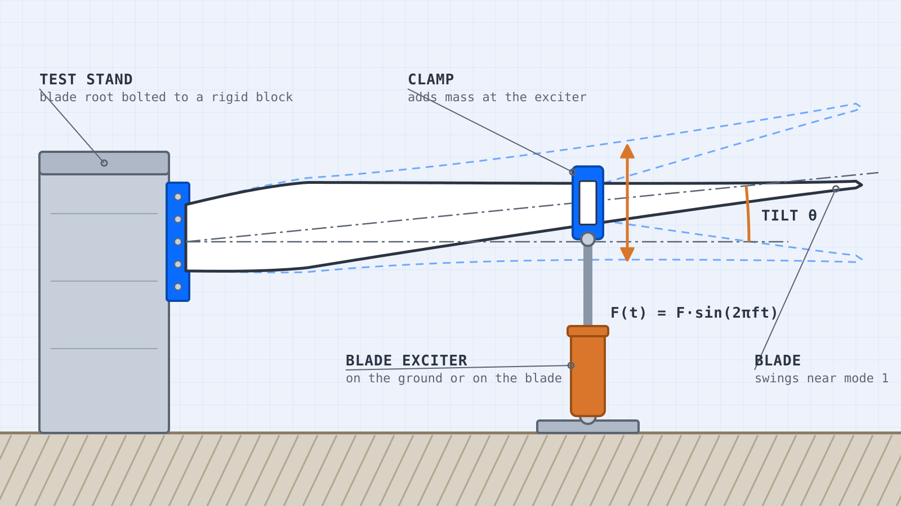

Simulation · Structural dynamics · Test engineering
Blade Fatigue Test Simulator
Simulate a resonant fatigue test of a wind turbine blade, right here in your browser. Pick a blade, place the exciter and clamps, choose a test frequency, and see how the blade swings, which bending moments it gets and how much power the exciter needs.

1 Blade and test setup
CSV or Excel in the input format below. You can also drop a file here. Your file is read in your browser and is never uploaded.
Test setup
Exciters (sine force, same phase)
| Position [m] | Peak force [N] |
|---|
Clamps and masses (incl. the exciter's moving mass)
| Position [m] | Mass [kg] |
|---|
Blade properties
Show all blade data (0 stations)
2 Natural frequencies
Mode shapes
Resonance curve click to set Ftest
3 Test simulation
Tip deflection
Exciter power
Deflection along the blade steady state
Bending moment along the blade steady state
The blue band in the time plots is the steady-state window used for the envelopes and averages.
Input file format
One table, one row per blade station. Settings go in the first data row, and exciters and clamps take one row each. This is the same layout as the Excel input files of the original MATLAB tool. The easiest start is to download the generic blade above and replace the numbers. Excel files (.xlsx) can be opened directly. Column names are matched loosely, so spacing and capital letters don't matter.
| Column | Type | Meaning |
|---|
How it works
This is a re-write of my MATLAB simulator. It solves the same equation, but in a different way. The MATLAB version marched the whole blade forward in tiny explicit time steps. This version first finds the blade's natural modes, then simulates each mode on its own and adds them together.
1. The equation
The blade is an Euler-Bernoulli beam, clamped at the root, with stiffness, mass and damping that vary along the span:
Here is the deflection, the mass per metre (clamps are added as point masses), the damping and the bending stiffness. The load is gravity (flapwise only) plus the exciters:
ramps gravity in over 5 s. The exciter factor starts at = 10 s (flapwise) or 0 s (edgewise), and its amplitude ramps from 0 to 1 over 10 s.
2. From a beam to matrices
The MATLAB version used finite differences: the deflection at 0.5 m spacing, and the fourth derivative from a 9-point stencil with ghost points beyond the tip. This version uses finite elements: the blade is split into 40 elements, and on each element the deflection is a cubic polynomial, described by the deflection and slope at its two ends.
The deflection is written as a sum of shape functions times nodal values, and integrating over each element gives the stiffness, mass and damping matrices:
This is the same equation, now as 80 coupled ordinary differential equations (deflection and slope at 40 nodes).
3. Natural modes
The blade's natural frequencies and mode shapes come straight from the matrices:
The MATLAB version found the frequencies by simulating a free vibration for 45 s and reading the peaks of an FFT. Here they come out directly, exact for the mesh.
4. Marching in time
With , the 80 coupled equations split into one independent mass-spring-damper per mode:
Each of the three is stepped with the Newmark average-acceleration method. It is stable for any time step, so the step only has to follow the motion (about 50 steps per period of mode 3):
The MATLAB version's explicit scheme is only stable when the time step is shorter than the fastest wiggle the grid can hold: at the stiff root. That wiggle (about 32 kHz) carries no useful information. The blade's own motion is below 5 Hz.
5. Adding it up
Three modes alone would slightly under-estimate a static load such as gravity, because the higher modes also bend a little under it. So the full static solution is used, and only the dynamic part of the three modes is added on top (the mode-acceleration method):
The bending moment comes from equilibrium: the loads and inertia forces outboard of a point, times their lever arm. The exciter power is force times velocity at each exciter:
Assumptions: small deflections, bending in one plane only (no flap-edge coupling or torsion), and damping proportional to mass. Clamps are point masses. The engine is checked against textbook results for a uniform cantilever: natural frequencies, gravity sag, tip load, and the steady-state amplitude against an exact frequency-domain solution.
Generic blade: the public NREL 5 MW reference blade (61.5 m), from J. Jonkman et al., Definition of a 5-MW Reference Wind Turbine for Offshore System Development, NREL/TP-500-38060, 2009. Data from the OpenFAST r-test repository (Apache 2.0). Clamps, exciter and damping are my own example values.